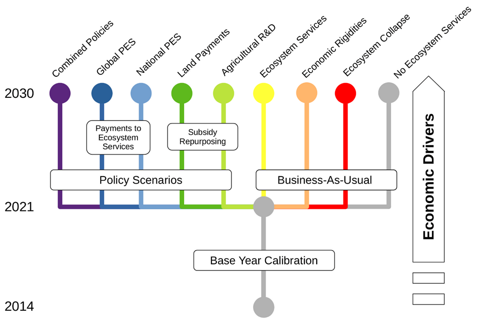

3. Scenarios and Policy specification
To understand different aspects of the earth-economy linkage, we compare multiple scenarios on different policies, economic assumptions, and conceptions of “business as usual” (BAU). In this section, we report how we used the created model with multiple scenarios to assess various aspects of the earth-economy linkage.
Before running policy-relevant scenarios, our first step was to update the baseline economy from 2014 to 2021 to be closer to the present year. To do this, we ran a “Base Year Calibration” scenario that projects the global economy from Y2014 – the latest reference year of the GTAP v.10 database – to Y2021, which is the base year used in this paper. We then apply all policies and other shocks to this 2021 snapshot of the economy. To generate the 2021 economy, we specified how the exogenous factors in our model would evolve from 2014 to 2021 and then applied them as a shock to the 2014 equilibrium. We use a similar approach for scenarios that proceed to 2030 (represented in Figure S.3.1 as the “Economic Drivers” arrow on the right-hand side).
With the 2021 baseline economy defined, we then define two sets of future scenarios that project from Y2021 to Y2030. Below, we discuss these two sets of scenarios, namely the BAU scenarios (right-hand side of Figure S.3.1) and the Policy Scenarios (left-hand side).

Figure S.3.1: Summary of scenarios and policies analyzed
3.1. BAU scenarios
Our BAU scenarios include “no Ecosystem Services”, “Ecosystem Services”, “Economic Rigidities” and “Ecosystem Collapse” scenarios. To create Figure 1 in the main text, we calculated the difference between the “no Ecosystem Services” scenario, which projects basic economic activity to 2030 but ignores all changes in ecosystem services, and the “Ecosystems Services” scenario, which incorporates shocks to the economy from changes in pollination services, timber carbon stock and fisheries stock. The difference between these scenarios identifies a subset of estimates on “how much nature matters” and gives us as sense of how wrong our calculations can be if we ignore earth-economy linkages.
3.1.1. Economic Rigidity
Our BAU scenarios also consider two important sensitivity analyses. First, in the “Economic Rigidities” scenario, we assess what happens to the economy if it exhibits more rigidity and less substitutability. Specifically, this scenario builds on the “Ecosystem Services” scenario and uses smaller elasticity values for key economic parameters in GTAP-AEZ model. These include: (a) Elasticity of transformation between land cover types, (b) Elasticity of cropland transformation among crops, (c) Constant elasticity of substitution (CES) between primary factors in production, (d) Armington CES for regional allocation of imports and (e) Armington CES for domestic/imported allocation. We obtain lowers bound of the 95% confidence intervals for the Armington CES for regional allocation of imports and Armington CES for domestic/imported allocation based on adjusted estimates from Hertel et al (2007) and Hertel et al (2006) respectively. For the other parameters, standard values are deflated by 50%.
3.1.2. Ecosystem Collapse
We also analyzed what happens to the economy under an “Ecosystem Collapse” scenario, which analyzes very large changes in ecosystems services rather than just small shocks from currently projected land-use change, as analyzed in the main manuscript. These ecosystem collapse shocks are a highly simplified representation of what might happen when key relationships in the ecosystem pass ecological tipping-points. We draw from the tipping-point scenarios defined in the Dasgupta Review of the Economics of Biodiversity (2021, pp. 375, Box 14.3), which used an earlier version of the GTAP-InVEST model. The three specific elements shocked in the collapse scenario are widespread dieback of tropical forests, collapse of wild pollinator populations, and severe losses in marine fishery populations.
A large body of literature suggests that regime changes may happen because large parts of the biosphere are close to tipping points (Rockström et al. 2009; Steffen et al. 2015). According to these studies, it is possible that when some (probably unknown) ecological thresholds are passed, it might trigger large, non-linear, systemic change in the health of entire ecosystems. It is extremely challenging to predict when tipping points might be crossed. Instead, these results are not predicted to happen at some specific point in time, but are presented to explore scenarios and economic implications of large-scale ecological change. We suggest that our readers interpret these results with some caution because the exact thresholds are unknown and what happens beyond the threshold remains poorly understood, especially at large spatial scales (Lenton 2013).
Conceptually, it is important to consider such non-linear changes and estimate how they might have further, possibly non-linear, effects in the economy. Traditional CGE models ameliorate many negative impacts to some degree by substitution away from affected sectors. However, it might be the case that such substitution is limited in overall quantity and that very large changes could cause decreased flexibility within the economy, amplifying negative effects. We discussed this possibility above in our section on economic rigidity.
To determine which tipping points we wanted to assess, we reviewed the “Regime Changes” database produced by the Stockholm Resilience Center[1]. We identified three scenarios that we were able to evaluate in GTAP-InVEST. These include assessing wide-spread collapse of tropical forests that results in forests converting into grasslands and shrubs, global pollinator collapse, and climate-related reductions in fisheries output.
We define the specific shocks that we impose on the GTAP-InVEST model in Table S.3.1, reproduced with permission from Johnson et al. (2021).
| Scenario | Method to calculate shock |
| Wild pollination collapse | The BAU and policy scenario considers how pollination services would change when different levels of pollinator habitat are present near pollinator-dependent crops. It does not consider what happens if broad-scale reductions in pollinator colony health result in additional changes unrelated to LULC configuration. To model this extended pollinator collapse scenario, we modified the pollination scenario to also contain a 90 percent reduction in pollination sufficiency. The 90 percent reduction is less severe than other attempts to model pollinator collapse, e.g., Bauer and Wang (2016) evaluate a scenario where most, but not all, species of wild pollinators cease to provide service. Note that this shock means crops only partially dependent on pollination services will not see yield reductions as large as the pollinator collapse. Assessing the extent to which markets shift, consumers substitute to non-pollinator crops, and producers substitute to non-pollinator intermediate goods will test the global market’s ability to absorb such a large shock. |
| Marine fisheries collapse | The model relies on the Fisheries and Marine Ecosystem Model Intercomparison Project data (Lotze et al. 2019). To simulate the regime shift, the model assumes a severe climate change scenario (8.5 instead of RCP4.5) and further takes the worst-case outcome in terms of climate change impact reported in the uncertainty bounds and sensitivity analysis. The model simulates severe disruptions of fish migration that lead to a reduced total catch biomass, which in turn impacts the economic model. This type of collapse would reflect when, for example, fish populations are blocked from migrating north or south to keep a constant habitat. The reduced fisheries impact the model by lowering Total Catch Biomass in the projections, which registers as a technology-neutral productivity change in the fisheries sector. |
| Widespread conversion of tropical forests to savannah | To create this regime-change shock, we used the SEALS model to project a landscape where 88% of the forests in tropical regions (specifically AEZs 5 and 6) were converted to grassland or shrubland. The landscape generated by this calculation had much less forest cover, so when it was used as an input to InVEST, the relative sizes of ecosystem service impacts were much larger. As with all of these tipping-point scenarios, the precise magnitude of forest dieback is unknown, and instead we aimed to provide illustrative values that can then be processed through the rest of the GTAP-InVEST model. l |
Table S.3.1: Shocks applied to the GTAP-InVEST model
Note that the definition of this ecosystem-collapse scenario is subtly different than in Johnson et al. (2021). In the previous study, the shocks to update the global economy from 2021 to 2030 (see Figure S.3.1) were imposed along with the ecosystem-collapse shocks. With this approach, the contractionary impacts of ecosystem-collapse interacted with economic growth, thereby resulting in higher losses ($2.7 trillion in the previous study versus $2.0 trillion here). In this article, we applied the ecosystem-collapse shock after the economy grew to the 2030 level. We did this to isolate the impacts of ecosystem-collapse on direct economic activity rather than in combination with growth effects, which makes attribution to ecosystem services more challenging. Ecosystem-service and economic growth interactions remain important, however, so future research is needed to further identify this interrelation.
3.2. Policy Scenarios
The second set of scenarios are policy scenarios that define several nature-smart policies to see how they impact the outcomes of the GTAP-InVEST model. Our approach draws on four different policies: (i) removing agricultural subsidies, (ii) domestic carbon forest payments, (iii) global carbon forest payments, and (iv) agricultural research and development (R&D). Removing agricultural subsidies, sometimes referred to as “decoupling support to farmers”, requires that certain agricultural subsidies are replaced with a direct payment to landowners using the “savings” obtained from not paying the subsidy. Carbon forest payments can be either domestically or globally managed. In the domestic case, governments compensate landowners to preserve land instead of converting it for agriculture or other purposes. For globally managed forest payments, wealthier countries contribute to a global pool based on their historical emissions. The pool is allocated to developing countries, compensating them to limit land use in a manner equivalent to the payment received. Research and development investments focus on increasing the efficiency of land already converted for agricultural purposes, meaning that supply can rise without expansions in land use.
Referring back to Figure S.3.1, the “Policies” scenarios include subsidy repurposing and payments to ecosystem services. Input and output subsidies paid to the agricultural sector are reallocated as land input subsidies (“Land Payments”) or are reinvested into public agricultural R&D (“Agricultural R&D”). Calculations under “Agricultural R&D” scenario relies heavily on the framework from Baldos et al. (2019), which estimates the public R&D spending increase required to offset agricultural productivity losses from climate change. The payment schemes to ecosystem services include “Local PES” and “Global PES”. Under the “Global PES” scenario, high-income countries fund a global budget via income transfers. The budget compensates income losses in countries that set aside land for natural use. In the “Local PES” scheme, the budget is based on the amount of input and output subsidies in agriculture for each region. Finally, the “Combined Policies” scenario incorporates the methods from the “Agricultural R&D” and “Global PES” scenarios